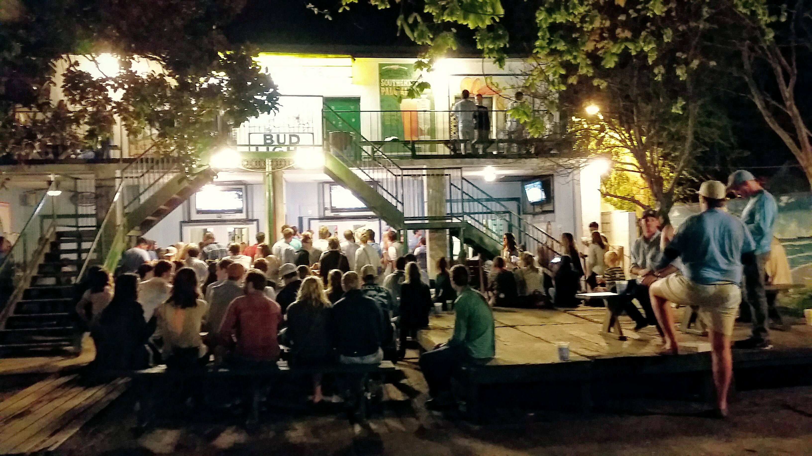

North Carolina
April 2018

I visited a friend in North Carolina and we explored the Triangle area. We spent some time in Chapel Hill, which is home to the University of North Carolina. We also visited museums and bar-hopped in downtown Raleigh, North Carolina's capital.